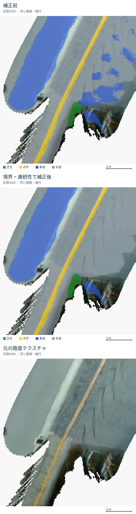
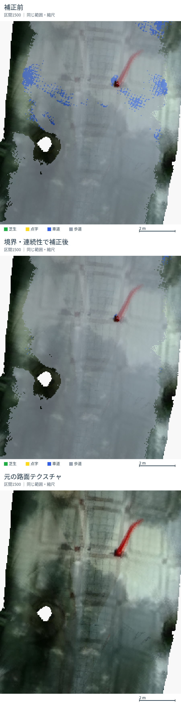
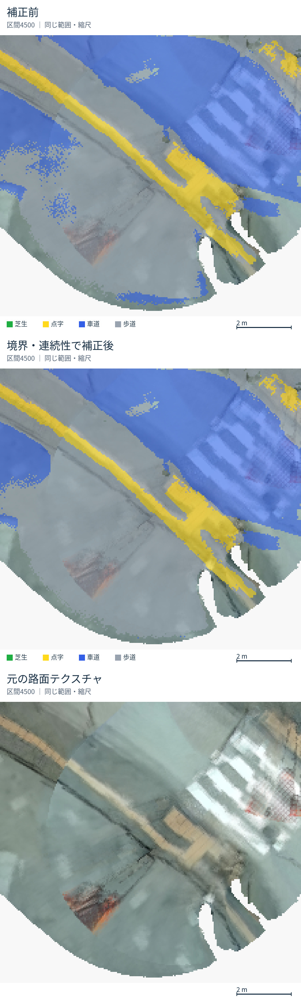
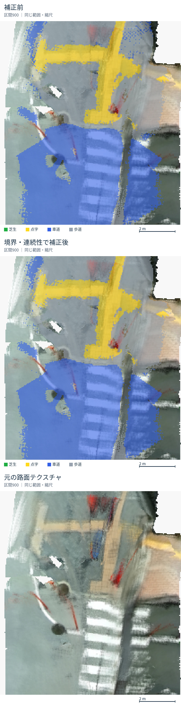
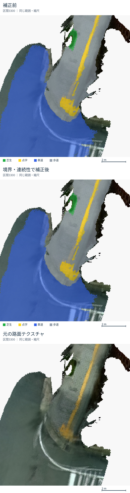
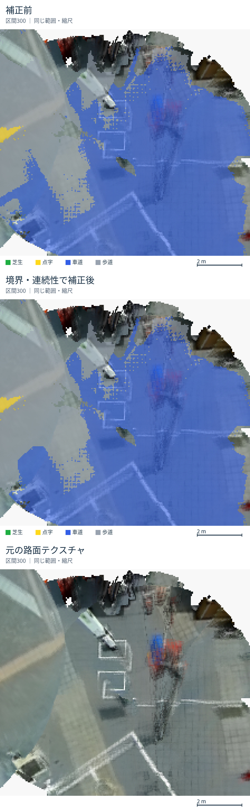
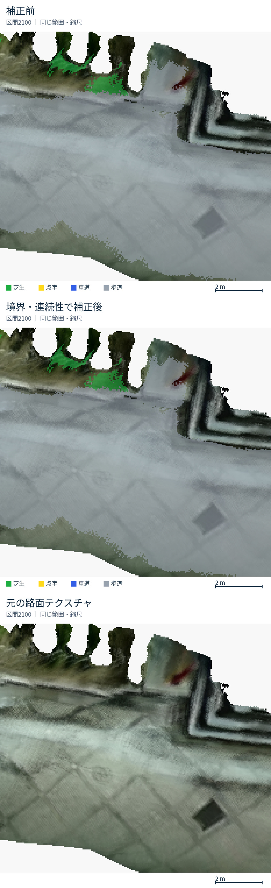
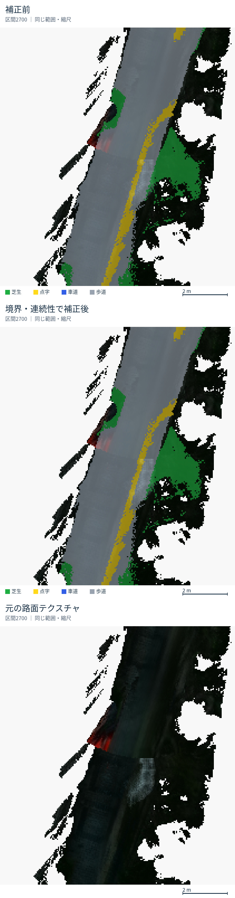
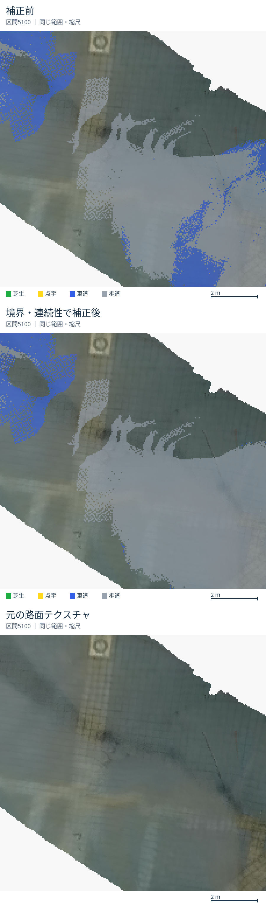
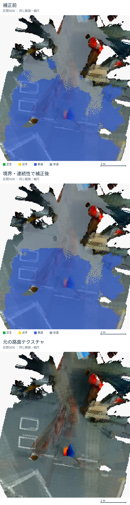

上：補正前／中：補正後／下：元のテクスチャ。同じ範囲・縮尺です。9条件を比較し、画像の境界と路面の連続性で車道の細かな混入を抑えました。点字・芝生・元のRGBは保持。歩道を新たに車道へ広げる変更は採用していません。大きな領域全体が誤認識されている区間300・5650などは残っています。
補正後の全体地図と3種類の画像









比較・評価は同じ記録内での探索です。評価用の内部領域は暫定で、独立した正解データではありません。分類の境界は画像から推定しており、縁石の高さは測定していません。